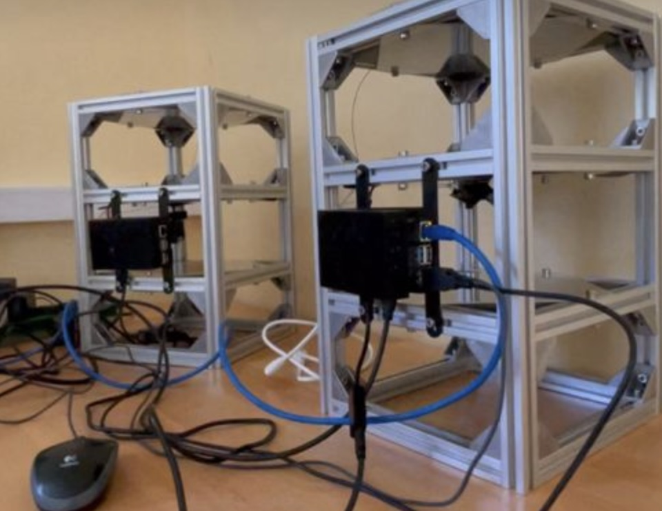

01 / Research / structural & optical engineeringAug 2026 – present
Trinity Neutrino Observatory
Modular telescope CAD, Python stiffness-matrix modeling, Monte Carlo optical sensitivity, ANSYS cross-checks and field operations.
Read case studyProject index / 01–05
Five technical case studies covering what I built, why I made key design choices, how I evaluated performance, and where the work stands.
Modular telescope CAD, Python stiffness-matrix modeling, Monte Carlo optical sensitivity, ANSYS cross-checks and field operations.
Read case study
A-arm geometry, governing impact loads, double-shear joint sizing, a manufactured shock reducer and structural FEA.
Read case studyCompetition robot integrating drivetrain, compliant mechanisms and solenoid actuation; requirements, tolerance analysis and failure-driven iteration.
Read case study
Hand-built hoverboard-motor turbine with PVC rotor assembly, preliminary blade CFD and measured continuous output of 15–20 W.
Read case study
Cosmic-ray detector assembly and calibration, two decades of orbital and transmission data, and a proton-based soil moisture detector.
Read case studyMy foundation in competitive robotics combines shop experience with team leadership and design under competition constraints.
FIRST Robotics case study